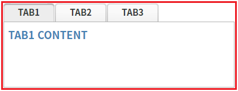
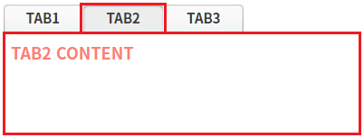
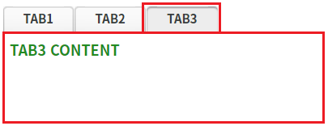

TabControl의 탭 Index로 탭을 선택하는 함수 'setSelectedTabIndex' 예시입니다. 이 함수는 비동기로 실행되기 때문에 탭 선택이 완료된 후 로직을 구성해야 한다면 키워드 'await'와 'async'를 사용해야 합니다. 아래의 4 구현 예시를 통해 스크립트를 확인할 수 있습니다.
탭의 Index로 탭 선택하기
STEP 1. 초기 상태를 확인합니다.
TabControl에 3개의 탭이 구성되어 있고, 첫 번째 탭이 선택된 상태입니다.
그림 1.브라우저(Chrome) 실행 예시

STEP 2. 탭의 Index가 1인 탭을 선택합니다.
버튼 Index가 1인 탭 선택하기 - await 사용을 클릭합니다.STEP 3. 실행된 결과를 확인합니다.
그림 2.브라우저(Chrome) 실행 예시

STEP 4. 탭의 Index가 2인 탭을 선택합니다.
버튼 Index가 2인 탭 선택하기를 클릭합니다.STEP 5. 실행된 결과를 확인합니다.
그림 3.브라우저(Chrome) 실행 예시

TabControl의 함수 'setSelectedTabIndex'를 이용하여 스크립트를 작성합니다. 이 함수는 비동기로 실행되기 때문에 탭 선택이 완료된 후 로직을 구성해야 한다면 키워드 'await'와 'async'를 사용해야 합니다. 함수 선언은 아래의 스크립트 예시에 작성되어 있습니다.
스크립트 - async, await 사용
/** * 이 함수는 TabControl의 함수 'setSelectedTabIndex'가 실행이 완료된 후 로직을 구성할 때의 예시입니다. */ scwin.btn_exam1_1_onclick = async function (e) { // TabControl 'tac_exam1'의 2번째 탭을 선택합니다. await tac_exam1.setSelectedTabIndex(1); // 탭 선택 이후 진행할 로직을 구성합니다. };
스크립트
/** * 이 함수는 TabControl의 함수 'setSelectedTabIndex'가 실행의 완료 여부와 무관하게 로직을 구성할 때의 예시입니다. */ scwin.btn_exam1_2_onclick = function (e) { // TabControl 'tac_exam1'의 3번째 탭을 선택합니다. tac_exam1.setSelectedTabIndex(2); // 탭의 선택 완료 여부와는 무관하게 로직을 구성합니다. };
setSelectedTabIndex( tabIndex )
[웹스퀘어5 SP5 개발 가이드] TabControl
링크 : https://docs1.inswave.com/sp5_user_guide/2059d4ce88b2fc16#0eeccc9d7fde2d33